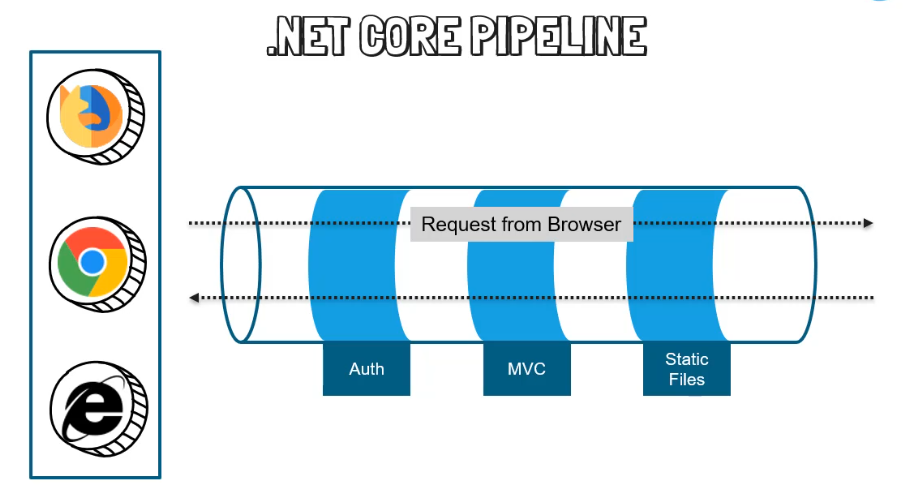
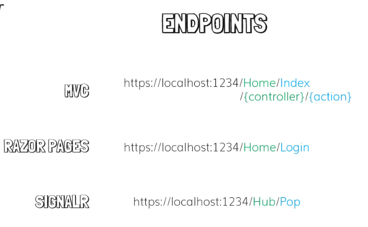

1-Fundamentals of ASP.NET Core
2-Entity Framework Core
3-CRUD Operation
4-Session, Viewdata, viewbag, validations
5-Add Identity to project
6-Email Templates
7-Assignments, Error Solving
How to restore default settings in visual studio?? Tools → Import and Export Settings
------------------------------------------------------------
.net core is biggest change to .net language
why we use .net core instead of classic .net framwork??
1-fast and open source
2-cross platform
3-Built in dependency injection(saves a lot of time)
4-Easy Updates
5-Cloud Friendly
6-Performance-->.net core acutal performance is multiple times more than any of the famous framework implementations
-->Microsoft has quite long term plan with .net core technology
<ItemGroup>-->include all third party packages
in file Program.cs CreateHostBuilder()-->configures the web host using defaults
----------------------------------------------------------
Dependency Injection

What happens if in future you change the implementation of how you access the database or email?
-->Based on the current configuration, you might need to make changes in all the three pages

-->With dependency injection, we have something new which is DI CONTAINER(dependency injection container), and rather to have email and database functionality in just classes, we will use interface for email and database
-->so inside the page we will actually be using interfaces and then dependency injection does all its magic of passing the object when websites needs it, that way we don't need to deal with creating the object, disposing or managing that object inside our pages
-->our pages will look very clean with just the interfaces and all the instance and implementation will be done by the dependency injection container
---------------------------------------------------------
Startup Class
-->it's a basic class with no extension or implementations of interface
-->Startup class has method called ConfigureServices()-->it's place where you do the registration of your service, service basically any functionality that you want to register so other parts of application can use it like email, database, etc
-->Startup Class has another method called Configure(IApplicationBuilder app, IWebHostEnvironment env)
IWebHostEnvironment-->to check if it's development environment or if it's something else, based on that we configure the pipeline
IApplicationBuilder-->configures the http request pipeline of asp.net core, the pipeline specifies how the application should respond to http request

Pipeline-->is made up of middlewares and MVC i middleware itself, examples of middleware: Auth, MVC, Static Files, Session, so when request happen it go through middleware, it can get modified by them and eventually it's passed to the next middleware and if that is the last middleware in the pipeline the response is return back to server
-------------------------------------------------------
Routing in MVC

-->.net core is now more than just an MVC application, it can also have Razor pages and signalR, it's possible to have all three in a single application, all of these technologies have middleware where's that register endpoints

---------------------------------------------------------
appsettings.json
-->This is the file in which we'll be adding all of the connection strings and static files like secrets that we want in a production application
-------------------------------------------------------
MVC Architecture
-->if you have 10 tables in the database, you will have at least 10 models.
-->if a class is a model, then all the properties in that class will be all the columns of a table

---------------------------------------------------------
Views in Default Project
-->in the views, we have a shared folder, this shared folder is used for partial views, partial views is similar to user components if you're coming from classic C#, so it's basically a view that you want to consume in multiple places in your application
-->in views folder we have _ViewImports.cshtml-->the purpose of this file is to provide a mechanism to make directive's available to reserve page globally so that you don't have to add them to the pages individually
ex:
@addTagHelper *, Microsoft.AspNetCore.Mvc.TagHelpers
-->with this all the default tage helper's that asp.net core team provide will be added to a razor pages in your application
-->tag helpers you will see in views files, it's make the binding like html language but it does the binding with C# code ex:
asp-area=""
asp-controller=""
asp-action=""
-->Tag helpers is an idea that microsoft team has adopted from other languages after looking at the success like angular and react
_ViewStart.cshtml-->The main purpose is to set values that all the other views will have to use, most common views that will set properties is layout
---------------------------------------------------------
Create First Model
ex:
using System.ComponentModel.DataAnnotations;
namespace Rocky.Models{
public class Category{
[Key]
public int Id {get; set;}
}
}
-->once you add data annotations, it tells entity framework that this column needs to be an identity column (primary key)
What is data annotation in C#??
Data annotations (available as part of the System. ComponentModel. DataAnnotations namespace) are attributes that can be applied to classes or class members to specify the relationship between classes, describe how the data is to be displayed in the UI, and specify validation rules
---------------------------------------------------------
Connection String
-->in ASP.NET core configuration system is very flexible, and the connection string could be stored in appsettings.json, an environment variable, the user secret store or another configuration source
ex:
in appsettings.json:
{
"ConnectionStrings": {
"DefaultConnection": {"Server=.;Database=Rocky;Trusted_Connection=True;'MultipleActiveResultSets=True'"}
}
----------------------------------------------------------
Setup DbContext
DbContext-->is provided by entity framework
Entity Framework-->is an Object Relational Mapping(ORM) framework that offers an automated mechanism to developers for storing and accessing the data in the database.
-->You need to download two packages:
1-Microsoft.EntityFrameworkCore
2-Microsoft.EntityFrameworkCore.SqlServer
-->Add folder in project named "Data" and make file called "ApplicationDbContext.cs":
ex:
namespace Rocky.Data {
public class ApplicationDbContext : DbContext{
public ApplicationDbContext(DbContextOptions<ApplicationDbContext> options): base(options){
}
public DbSet<Category> Category {get; set;}
}
}
Complete DbContext Configuration
in Startup.cs:
public void ConfigureServices(IServiceCollection services){
services.AddDbContext<ApplicationDbContext>(options => options.UseSqlServer(Configuration.GetConnectionString("DefaultConnection")))
}
---------------------------------------------------------
Push Category to Database
-->we need to add migration to push category to the database, in order to add migration we install Microsoft.EntityFrameworkCore.Tools package then we go to tools->NuGet Package Manager->Package Manager Console
PM>add-migration addCategoryToDatabase
PM>update-database
-->if you don't have database, it will first create the database and then proceed fruther to push migration
---------------------------------------------------------
Entity Framework vs ADO.NET
-->ADO.NET entity is an ORM (Object Relational Mapping) which creates a higher abstract object model over ADO.NET components... Entity Framework is a wrapper for ADO.NET thus there is nearly no difference between those two in performance (Maybe entity framework is a bit slower)
---------------------------------------------------------
Add Category Controller
Note-->in order to add any folder or file to your project you need to stop application if it's running(IIS Express) server.
-->You can create view by click right on action in controller and add razor view, it will add a few new packages for scaffolding and then it will create the view
----------------------------------------------------------
Note-->with Razor syntax, you can combine C# syntax with HTML
---------------------------------------------------------
What is the advantages of writing <label asp-for="DisplayOrder"></label> instead of DisplayOrder?
-->The advantage this tag helper brings is if we open up our category model you can use data annotations to display something else ex:
[DisplayName("Display Order")]
public int DisplayOrder {get; set;}
---------------------------------------------------------
Validations in ASP.NET Core
-->You can always use custom javascript to what was entered and display alert message, but with ASP.NET coure you get validation right out of the box, in order to implement validations, we have data annotations
-->you can make validation using server side or client side